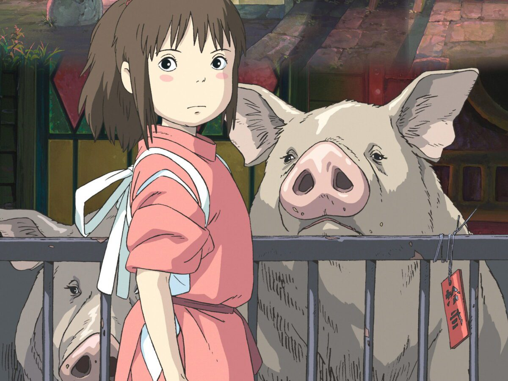
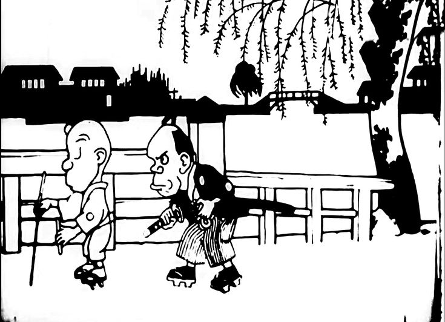

What Is Anime? Everything You Need To Know

Anime is a Japanese animation style that is produced or influenced by it. It is the Japanese term for cartoon or animation where the Japanese use the word to describe all cartoons irrespective of the nation. However, outside Japan, anime denotes animation movies that come exclusively from Japan, distinguished by blazing graphics, energetic characters, and attractive themes such as sci-fi, romance, and supernatural forces.Therefore, consider this syllogism: all anime shows are cartoons, but not all cartoons are anime.
The art style connected with anime is distinct and easily identifiable. Large eyes, untamed hair, lengthy arms and limbs, and other features are certainly known to you. This exaggerated design allows the characters to convey their emotions more freely, which is plentiful in anime.
Technical animation methods like dramatic closeups and zooms, vivid lighting, and brilliant colors contribute to the anime’s emotional atmosphere. However, beyond its unusual visual appearance, anime has endeared itself to viewers; thanks to its nuanced characters and compelling plotlines.
History Of Anime
Anime has been around for almost a century. The first confirmed example, Namakura Gatana, was released in 1917 and lasted only four minutes. It faced highs and lows as it overcame various hurdles domestically and globally.

Artistry and styles appear endless, and the artistic expression depends on the artists. However, regardless of the different types, one thing is consistent throughout these productions: the process is time-consuming.
Various artists have pushed the boundaries and stories told with anime as their preferred choice of medium. The genres that fall under this umbrella are as varied as the art form. Many people in the West have a perception of how anime looks.
The Process Of Creating Anime
Technically, anime is identical to the animation produced in Western culture. However, it consumes a tremendous amount of time and effort. Written, storyboarded, workshopped, animated, voiced, and animated stories are all required. This lengthy process can take months, if not years, to complete. A team of artists does these projects, usually overseen by a director.
Anime is still a challenging form to produce, even with modern technology that allows artists to make animation with digital tools. Digital technology has pushed the creative boundaries of what these films can look like using lighting techniques and other tactics, but it has not taken away from the artists’ hard work.
The inventiveness of the artists that produce animation is what makes it so unique. The medium allows for the subversion of genres and the portrayal of stories that would otherwise be impossible to render in any other audiovisual form of storytelling.